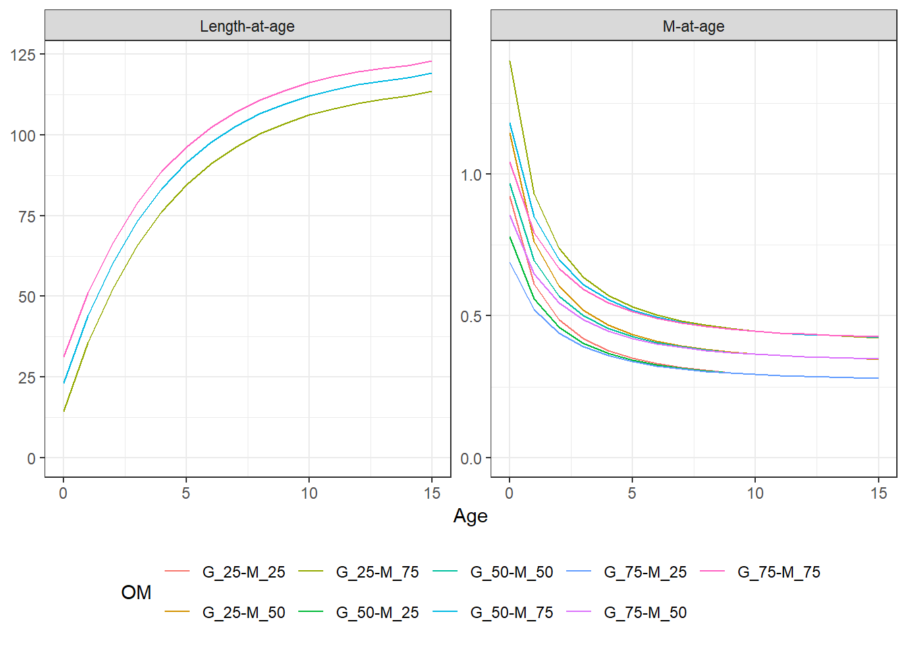
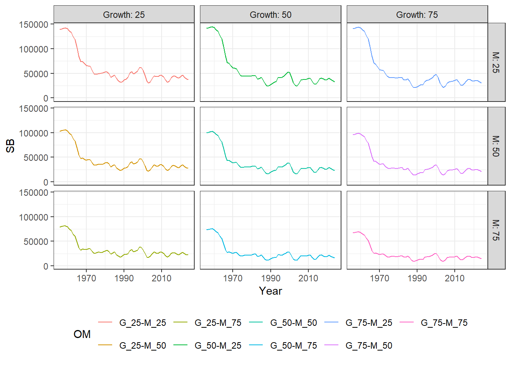
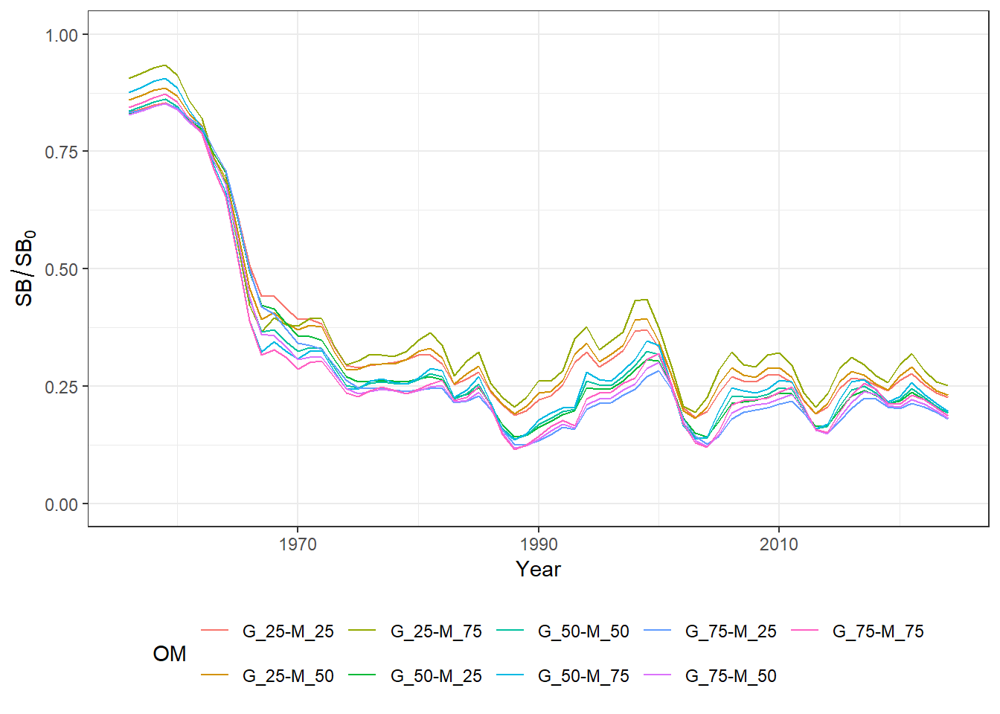
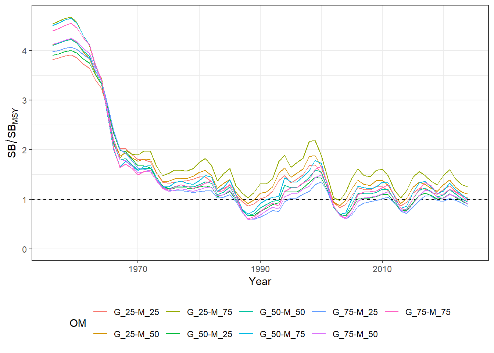
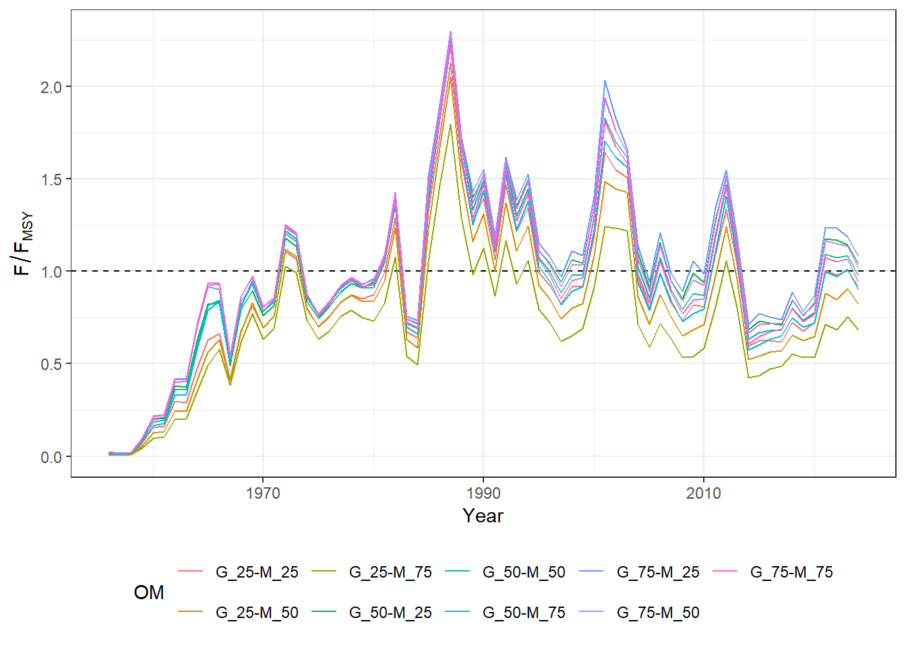

3 Reference Operating Models
The Reference Set OMs are currently designed as a factorial uncertainty grid with the two axes of uncertainty (Growth & Natural Mortality) developed during the 2026 Stock Assessment (see Chapter 2).
The Growth and Natural Mortality axes were both represented with three levels, corresponding to the 25th, 50th, and 75th percentiles of the estimated parameter distributions. The 50th percentile level for each axis matches the Base Case stock assessment model (S05).
The OM imported from this model is referred to as the Reference OM.
The three levels for each axis produces a 3 x 3 uncertainty grid with 9 reference operating models (Table 3.1). The von Bertalanffy growth parameters and the reference Lorenzen M value (at reference age 11) at each percentile level are shown in Table 3.2.
Figure 3.1 shows the length- and natural mortality-at-age curves for each of the 9 reference grid OMs.
NoteAdditional Reference Uncertainties
Additional operating models can be added to the Reference OMs, e.g., uncertainty in the steepness parameter of the Beverton-Holt stock recruit relationship or age/size of maturity.
This will be discussed by the SALB MSE Technical Team.
| # | OM | Growth | Natural Mortality |
|---|---|---|---|
| 1 | G_25-M_25 | 25th | 25th |
| 2 | G_25-M_50 | 25th | 50th |
| 3 | G_25-M_75 | 25th | 75th |
| 4 | G_50-M_25 | 50th | 25th |
| 5 | G_50-M_50 | 50th | 50th |
| 6 | G_50-M_75 | 50th | 75th |
| 7 | G_75-M_25 | 75th | 25th |
| 8 | G_75-M_50 | 75th | 50th |
| 9 | G_75-M_75 | 75th | 75th |
| Percentile | \(L_\infty\) | \(K\) | \(t_0\) | \(M\) |
|---|---|---|---|---|
| 25th | 115.93 | 0.235 | -0.561 | 0.29 |
| 50th (Base Case) | 121.24 | 0.238 | -0.891 | 0.36 |
| 75th | 125.02 | 0.237 | -1.217 | 0.44 |
3.1 Overview of Population Dynamics
Each operating model was imported from the maximum likelihood estimates (MLE) of the corresponding SS3 run, so within each OM the historical population dynamics are identical across simulations.
The figures below provide an overview of the population dynamics described in the nine Reference OMs:
-
Figure 3.2: historical spawning biomass
- Figure 3.3: historical spawning biomass relative to equilibrium unfished level
-
Figure 3.4: historical spawning biomass relative to the MSY level
- Figure 3.5: historical fishing mortality relative to the \(F_\text{MSY}\)
Table 3.3 summarises the MSY reference points, along with terminal year \(F/F_\text{MSY}\) and \(SB/SB_\text{MSY}\), for each of the nine Reference OMs.




3.2 Reference Points
| OM | FMSY | SBMSY | SPRMSY | MSY | F/FMSY | SB/SBMSY |
|---|---|---|---|---|---|---|
| G_25-M_25 | 0.465 | 36506.58 | 0.284 | 24162.66 | 0.918 | 1.032 |
| G_25-M_50 | 0.760 | 25046.72 | 0.275 | 24677.32 | 0.822 | 1.107 |
| G_25-M_75 | 1.317 | 17418.30 | 0.266 | 25578.61 | 0.684 | 1.259 |
| G_50-M_25 | 0.318 | 36215.84 | 0.278 | 23965.60 | 1.042 | 0.904 |
| G_50-M_50 | 0.420 | 24274.44 | 0.270 | 24333.31 | 0.974 | 0.943 |
| G_50-M_75 | 0.576 | 16222.00 | 0.262 | 24755.52 | 0.898 | 1.008 |
| G_75-M_25 | 0.277 | 35422.99 | 0.275 | 23973.49 | 1.081 | 0.861 |
| G_75-M_50 | 0.333 | 23292.29 | 0.267 | 24336.83 | 1.017 | 0.907 |
| G_75-M_75 | 0.414 | 15219.33 | 0.259 | 24727.88 | 0.942 | 0.972 |